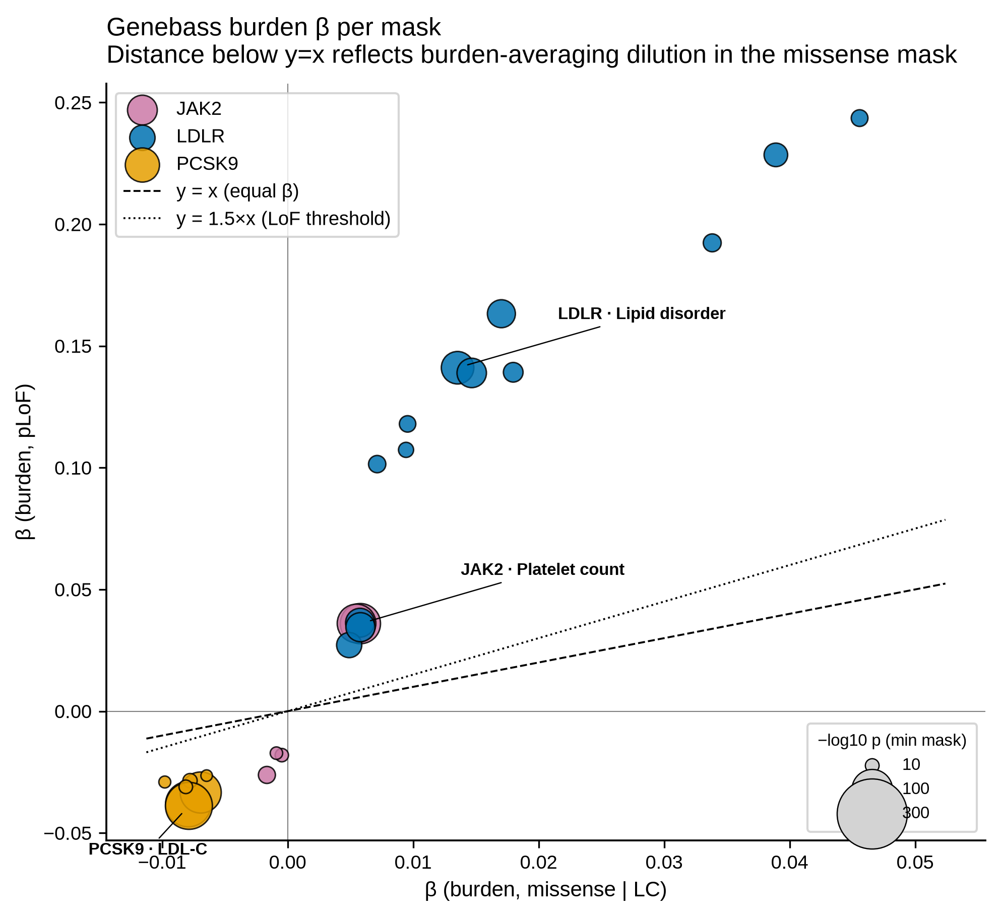
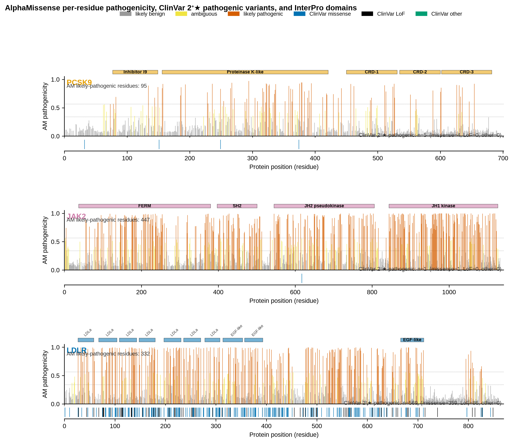
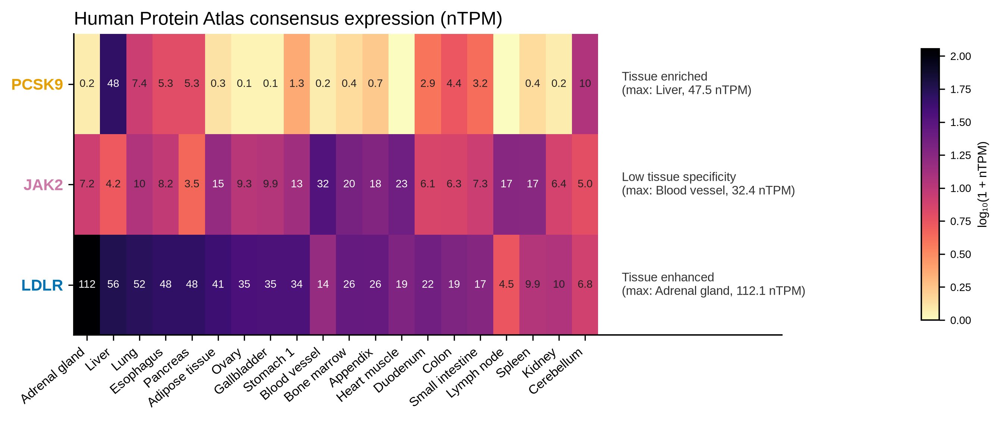
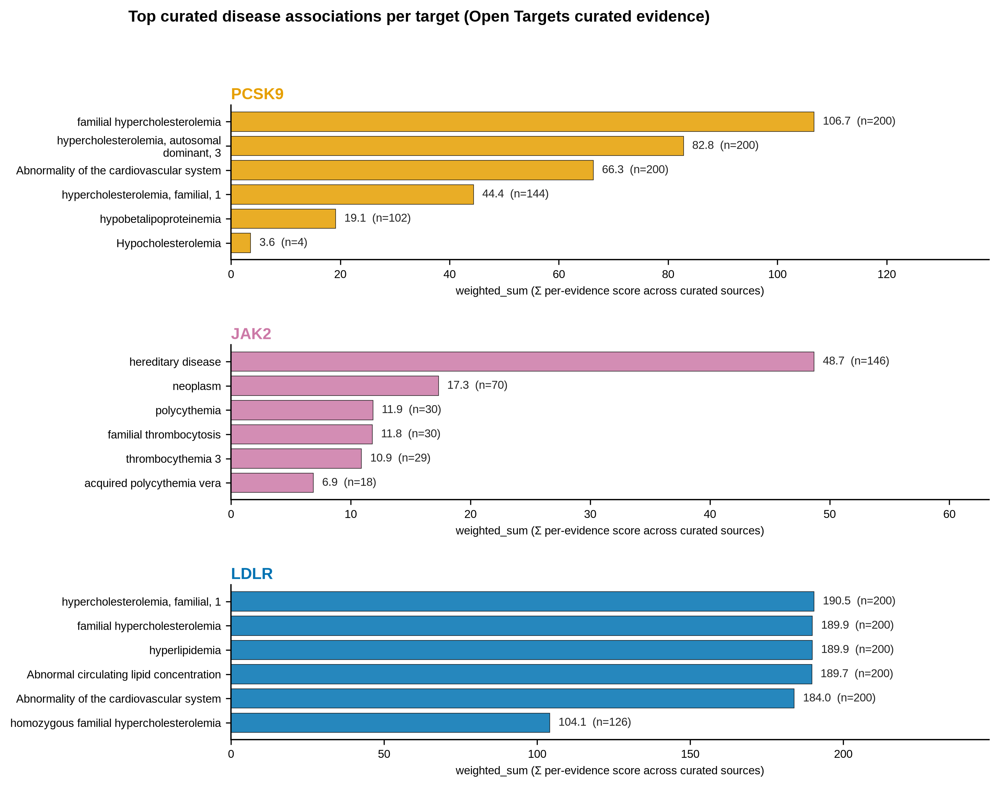
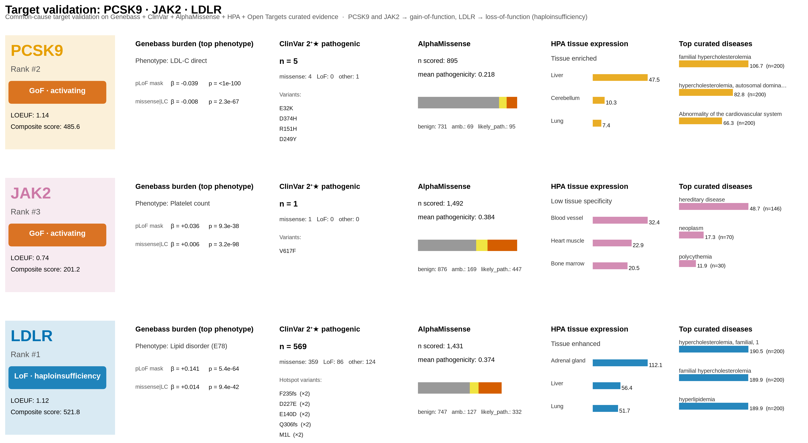

F2 Burden β scatter — mask discrimination
Genebass burden β for the pLoF mask vs. the missense|LC mask, one point per
(gene × phenotype) association where both masks have signal (n=25 dual-mask associations).
Point size scales with -log₁₀ of the more significant p-value.
Reference diagonals: y=x (equal β) and y=1.5x (LoF-haploinsufficiency threshold).
Interpretation. Every dual-mask signal falls above y=1.5x — pLoF β always
exceeds missense|LC β in magnitude. This is the burden-averaging artifact: a single missense
driver (V617F for JAK2, D374Y for PCSK9) is diluted by non-driver missense carriers.
Stage 3 alone cannot distinguish GoF from LoF from this pattern; stage 6 uses ClinVar
spectrum + LOEUF + curated GoF flags to make the final call.

F4 AlphaMissense landscape — per-residue evidence stack
Three vertically stacked panels (one per gene). Top strip: InterPro domain/family regions.
Main plot: AlphaMissense per-residue max pathogenicity as vertical lines colored by AM class
(grey = likely_benign, yellow = ambiguous, vermilion = likely_pathogenic). Bottom strip:
ClinVar 2⁺★ pathogenic variant positions (blue = missense, black = LoF, green = other).
Interpretation. PCSK9 pathogenic missense variants cluster around the
catalytic domain (156–421); LDLR pathogenic LoF alleles (n=86) sit across the LDLa repeats
and EGF-like regions; JAK2's single 2⁺★ pathogenic variant is at ~617 in the JH2 pseudokinase
domain (V617F).

F5 HPA tissue expression heatmap
3 × 20 heatmap of Human Protein Atlas consensus nTPM (log₁₀(1+x) color scale, raw values
labeled in cells). Tissue set = union of top-8 tissues per gene + 7 disease-relevant tissues.
Right-side annotations show the HPA tissue-specificity call and max tissue per gene.
Interpretation.
PCSK9 is tissue-enriched in liver (47.5 nTPM), matching its secreted hepatic biology;
JAK2 shows low tissue specificity (highest 32.4 in blood vessel), consistent with broad
hematopoietic + vascular cytokine signaling; LDLR is tissue-enhanced with max in adrenal
gland (112.1), though its LDL-C-clearance biology is dominated by hepatic expression
(56.4 nTPM).

F6 Top curated disease associations per target
Three horizontal bar panels showing the top-6 Open Targets curated disease associations
per gene, ranked by weighted_sum (sum of per-evidence scores across curated data sources).
Bar labels show weighted_sum and n_evidence.
Interpretation.
PCSK9 and LDLR share the familial hypercholesterolemia / lipid metabolism disease axis
(LDLR carries stronger evidence: ~190 vs ~107). JAK2's diseases (myeloproliferative
disorder, polycythemia, familial thrombocytosis) reflect the V617F GoF gain-of-signaling
mechanism.

F7 Target validation dashboard — 3×6 evidence composite
Landscape 16:9 composite. 3 gene rows × 6 evidence columns
(Header · Genebass burden · ClinVar · AlphaMissense · HPA · Diseases).
Header cards show final verdict pill, LOEUF, and composite score from stage 9.
All values pulled from source parquets — no hard-coded numbers.
Interpretation. Reading a row left-to-right gives the full evidence stack
behind each verdict:
LDLR (rank 1, LoF · haploinsufficiency) has large pLoF β + 86 LoF ClinVar alleles;
PCSK9 (rank 2, GoF · activating) has 0 LoF alleles among 5 pathogenic ClinVar variants +
LOEUF=1.14 — stage 6 GoF override correctly re-classifies from the LoF-looking burden pattern;
JAK2 (rank 3, GoF · activating) has 1 pathogenic ClinVar (V617F) + curated GoF term +
LOEUF=0.74.
